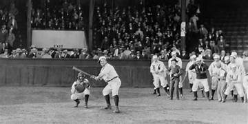
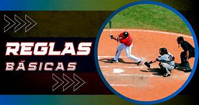
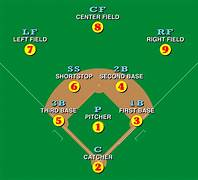
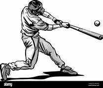
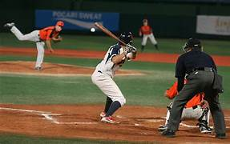
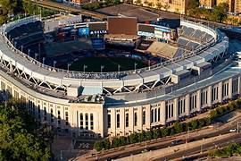
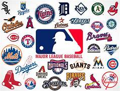
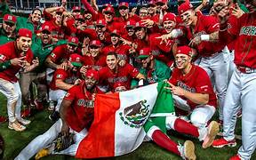

⚾ El Fascinante Mundo del Béisbol ⚾
Historia del Béisbol
El béisbol tiene sus orígenes en el siglo XIX en Estados Unidos, aunque sus raíces provienen de juegos similares practicados en Europa. Desde sus primeras ligas profesionales en la década de 1870 hasta convertirse en uno de los deportes más importantes del mundo, el béisbol ha sido sinónimo de pasión, tradición y cultura. Este deporte ha logrado unir generaciones y convertirse en un símbolo de identidad en países como Estados Unidos, México, Japón, República Dominicana, Cuba y Venezuela.
Con el paso de los años, el béisbol fue evolucionando, integrando nuevas reglas y tecnologías que permitieron modernizar el juego. Además, ha tenido un enorme impacto social, ya que se convirtió en un puente cultural entre naciones y un medio de inclusión en tiempos de segregación racial. Hoy en día, es considerado más que un deporte: es una tradición que transmite valores como el trabajo en equipo, la disciplina y el respeto.
Reglas Básicas
El béisbol se juega entre dos equipos de nueve jugadores. Cada equipo alterna entre atacar (batear) y defender (fildear). El objetivo principal es anotar carreras golpeando la pelota con el bate y corriendo a través de las bases hasta llegar al home. Las reglas dictan que un partido consta de nueve entradas, y el equipo con más carreras al final es el ganador. Aunque simples en esencia, las reglas esconden una gran complejidad estratégica que lo convierte en un deporte apasionante.
Existen detalles importantes como el conteo de bolas y strikes, el robo de bases, las jugadas dobles y la importancia de los árbitros para mantener la justicia del juego. Cada regla, aunque parezca mínima, influye en el resultado del partido y obliga a jugadores y entrenadores a tomar decisiones rápidas y precisas. Gracias a estas normas, el béisbol logra mantener un balance entre lo ofensivo y lo defensivo.
Posiciones en el Campo
En el béisbol existen nueve posiciones defensivas: lanzador, receptor, primera base, segunda base, tercera base, campocorto, jardín izquierdo, jardín central y jardín derecho. Cada posición tiene un papel fundamental en el desarrollo del juego, ya que la coordinación entre ellas permite detener al equipo contrario. La estrategia defensiva depende mucho del tipo de bateador y del lanzador en turno, lo que da al juego una profundidad táctica increíble.
Cada jugador debe poseer habilidades específicas: el receptor necesita reflejos rápidos y resistencia; los jardineros deben tener velocidad y fuerza en el brazo; mientras que los jugadores de cuadro requieren agilidad y precisión. El éxito de un equipo depende de cómo estas piezas trabajan en conjunto como una máquina perfectamente sincronizada.
El Arte del Bateo
Batear es considerado uno de los actos más difíciles en el deporte, pues requiere reflejos excepcionales y gran coordinación. Un bateador debe anticipar la velocidad, efecto y ubicación de la pelota lanzada por el pitcher, que puede alcanzar hasta 100 mph. El bateo no solo se trata de fuerza, sino de técnica, paciencia y disciplina. Los grandes bateadores son figuras legendarias en la historia del béisbol.
Además, los bateadores deben estudiar constantemente a los lanzadores, identificar patrones y ajustar su postura y swing dependiendo de la situación. Un buen bateador no solo busca conectar la pelota, sino colocarla estratégicamente para beneficiar al equipo. Esto convierte al bateo en una mezcla de arte, ciencia y psicología.
El Pitcheo
El pitcher es considerado el corazón del equipo defensivo. Sus lanzamientos pueden variar entre rectas, curvas, sliders y cambios de velocidad. El dominio del pitcheo requiere fuerza, precisión y un profundo conocimiento del rival. A lo largo de la historia, lanzadores como Nolan Ryan o Pedro Martínez han dejado huella como auténticos maestros del montículo.
La presión sobre un lanzador es enorme, ya que cada lanzamiento puede cambiar el destino de un partido. Además, el pitcheo no solo es físico, sino también mental: requiere concentración absoluta, control de emociones y la capacidad de engañar al bateador. Por ello, los pitchers son considerados estrategas en acción.
Estadios Icónicos
Los estadios de béisbol son auténticos templos del deporte. Desde el histórico Yankee Stadium en Nueva York hasta el majestuoso Tokyo Dome en Japón, cada uno cuenta con historias memorables. Estos recintos no solo son lugares para ver partidos, sino espacios culturales donde se generan recuerdos y tradiciones que pasan de generación en generación.
Muchos estadios se convierten en símbolos de sus ciudades y son visitados por millones de turistas cada año. Además, cada parque tiene características únicas, como la famosa “Green Monster” en Fenway Park o el techo retráctil de estadios modernos, lo que hace que cada experiencia sea irrepetible.
Grandes Equipos
Algunos equipos han alcanzado una mística especial dentro del béisbol. Los Yankees de Nueva York, los Dodgers de Los Ángeles y los Red Sox de Boston son ejemplos claros de equipos con millones de seguidores. Estos clubes han protagonizado rivalidades históricas y cuentan con una gran tradición ganadora.
Más allá de los títulos, los equipos representan culturas e identidades. Sus colores, himnos y estadios son parte de la vida cotidiana de sus aficionados, quienes transmiten su pasión de generación en generación. Por ello, el béisbol no solo es un espectáculo, sino también una comunidad unida por sus equipos.
Las Grandes Ligas (MLB)
La Major League Baseball (MLB) es la liga profesional más importante del mundo. Conformada por 30 equipos, representa el máximo nivel del béisbol internacional. Su temporada culmina con la Serie Mundial, uno de los eventos deportivos más vistos globalmente.
La MLB también es un motor económico y cultural, que atrae a millones de aficionados cada temporada. Además, ha servido como escenario para algunos de los momentos más icónicos de la historia del deporte, consolidando su lugar como la liga de referencia a nivel mundial.
El Béisbol en México
En México, el béisbol tiene gran arraigo, especialmente en el norte del país. La Liga Mexicana de Béisbol (LMB) y la Liga Mexicana del Pacífico (LMP) son los principales torneos profesionales. Grandes figuras mexicanas han brillado en las Grandes Ligas, como Fernando Valenzuela, conocido como “El Toro de Etchohuaquila”.
El béisbol mexicano también ha sido una fuente de orgullo nacional, fomentando el talento local y atrayendo a jugadores internacionales. En los últimos años, México ha crecido en competitividad y ha participado en torneos internacionales, demostrando su potencial como una potencia en este deporte.
Leyendas del Béisbol
.jpg)
A lo largo de los años, el béisbol ha visto surgir a leyendas inmortales como Babe Ruth, Hank Aaron, Jackie Robinson y Roberto Clemente. Cada uno dejó una huella imborrable tanto dentro como fuera del campo, inspirando a generaciones enteras.
Estas figuras no solo destacaron por sus estadísticas impresionantes, sino también por su influencia en la sociedad. Muchos rompieron barreras raciales, sociales y culturales, convirtiéndose en símbolos de justicia, igualdad y perseverancia. Su legado trasciende el deporte, siendo un ejemplo de superación personal y compromiso con la humanidad.